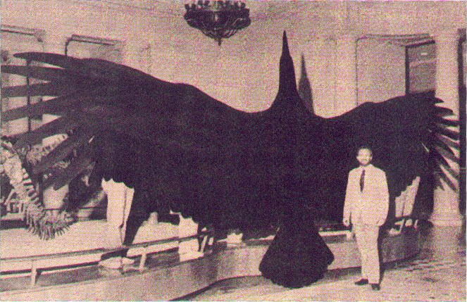
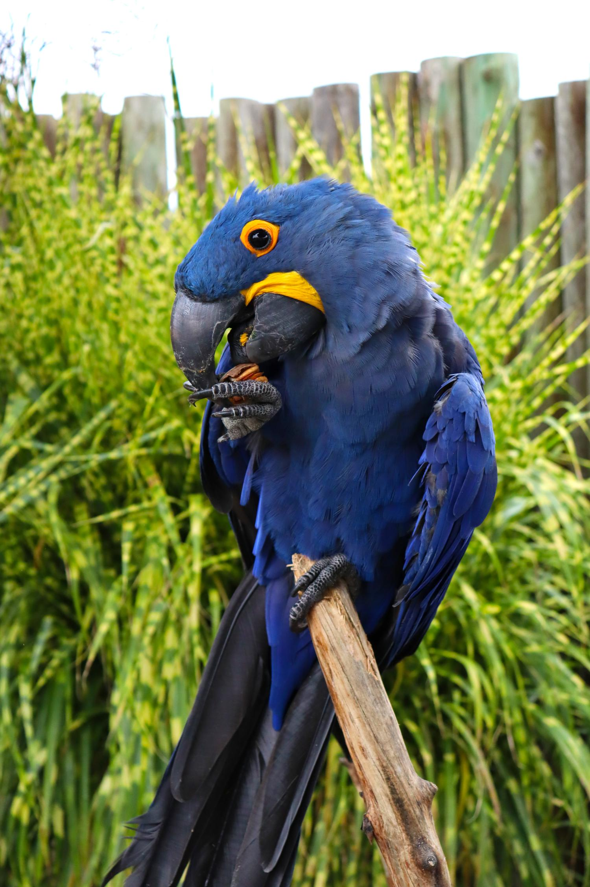

Argentavis magnificens
Argentavis magnificens, a giant teratorn, is renowned as the largest bird in history. This majestic creature lived millions of years ago during the late Miocene period in what is now Argentina. Standing at an impressive height of approximately 5.6 to 6.6 feet and weighing between 70 and 98 kg, Argentavis was notable for its size and remarkable wingspan, which could reach up to 23 feet. This enormous bird was a skilled glider, utilizing thermal updrafts to soar across vast distances in search of food. Kenneth Campbell found fossils of this bird, and you can see them at the Natural History Museum in Los Angeles.
Peregrine Falcon

The Peregrine Falcon is the fastest bird in the world. It can dive at speeds over 200 miles per hour! This makes it an excellent hunter. You can find these falcons on every continent except Antarctica. They have beautiful blue-gray feathers and a black hood.
Peregrine Falcons are also a success story in conservation. Their numbers dropped in the past, but they have made a strong comeback thanks to protection efforts.
Lovebirds

Lovebirds are small and colorful parrots that are very affectionate. They usually grow to about 5 to 7 inches long and can live for up to 20 years. I have a pair of rosy-faced lovebirds named Coco and Koko, and they have been with me for 11 years. Lovebirds are social and enjoy being together, making them great pets.
Crow

Crows are known for being very smart. They can communicate, solve problems, and even remember human faces. Crows use tools, like sticks, to help them get food. They live in many places, including cities and rural areas. Crows work together in groups and have complex social lives, making studying them interesting.
Hyacinth Macaw
The Hyacinth Macaw is one of the largest parrots, reaching 3.3 feet long. It has stunning blue feathers and is very intelligent. These parrots live in the rainforests of South America and eat fruits, nuts, and seeds. Hyacinth Macaws can live for up to 75 years, which is a long-term commitment for pet owners. They are social birds and enjoy interacting with others.